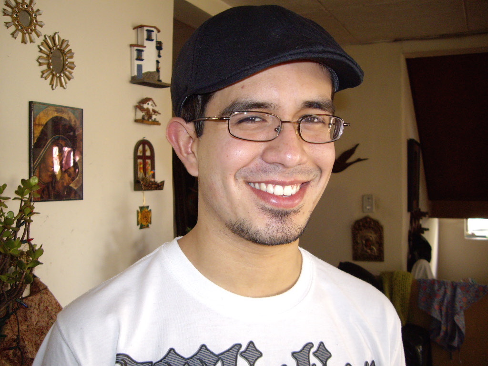

|
Miguel Velez
Undergraduate Student Researcher at the University of St. Thomas, Application Developer/Software Engineer at Sportradar US, and Lead Developer and Designer at Mijecu25
|
 |
 E-mail:
E-mail:  GitHub:
GitHub:  LinkedIn:
LinkedIn: Experience
Current:- Application Developer/Software Engineer Sportradar US - August 2015
- Computer Science Undergraduate Student Researcher University of St. Thomas - August 2014
- Lead Developer and Designer Mijecu25 - August 2014
- Research Intern Massachusetts Institute of Technology - June 2015 to August 2015
- Jr. Application Developer Sportradar US - February 2015 to May 2015
- Cloud Developer Intern Valtira, LLC - February 2013 to January 2015
- Computer Science and Chemistry Undergraduate Student Researcher University of St. Thomas - February 2014 to May 2014
- Computer Consultant University of St. Thomas - February 2012 to December 2015
- President of St. Thomas Activities and Recreation (STAR) University of St. Thomas - Febraury 2012 to May 2013
- STAR Saturday Night Programming Intern University of St. Thomas - May 2011 to May 2012
Research
Software Engineering, Programming Systems, and Programming Languages. Special interest in the development and optimization of software tools to aid the work of scientists and developers.
Publications:
- Faster WAH Compression Querying through the Use of Metadata M. Velez and J. Sawin. Consortium for Computing Sciences in Colleges Midwest Region 2015, October 2015. 1st place Discovery Track [PDF] [Poster]
- Simpler Implementation of Sketches through Enhanced Expressiveness M. Velez and A. Solar-Lezama. MIT Summer Research Poster Session 2015, August 2015. [PDF] [Poster]
- Current and Future Relationships Between Robots and Humans, M. Velez. Summa Cum Laude Paper, April 2015. [PDF]
- Extending SMILES to Encode Reaction Mechanisms, M. Velez, P. Gittins, and J. Sawin. Inquiry at St. Thomas, May 2014. [PDF] [Poster]
Projects
MIT - Computer-Aided Programming: Sportradar US:- Cricket feed browser
- Monitoring Formula 1 and Baseball
Honors and Awards
- MSRP Research Internship Massachusetts Institute of Technology - June 2015 (10.5% acceptance rate)
- Graduated Summa Cum Laude, BA in Computer Science and minor in Physics University of St. Thomas - December 2015
- CCSC:MW 2015 1st place Student Posters & Showcase Discovery Track 2015
- Student Travel Grant University of St. Thomas - 2015
- Collaborative Inquiry Grant University of St. Thomas - 2015
- Collaborative Inquiry Grant University of St. Thomas - 2014
- International Student Leadership Scholarship University of St. Thomas - 2012
- Bev and Pat Flaherty Scholarship University of St. Thomas - 2011 to 2014
- Dean's List University of St. Thomas - 2010 to 2015
- University of St. Thomas International Scholarship University of St. Thomas - 2010 to 2015
- University of St. Thomas Tuition Scholarship University of St. Thomas - 2010 to 2015
- American Field Service International Scholarship - 2008 – 2009